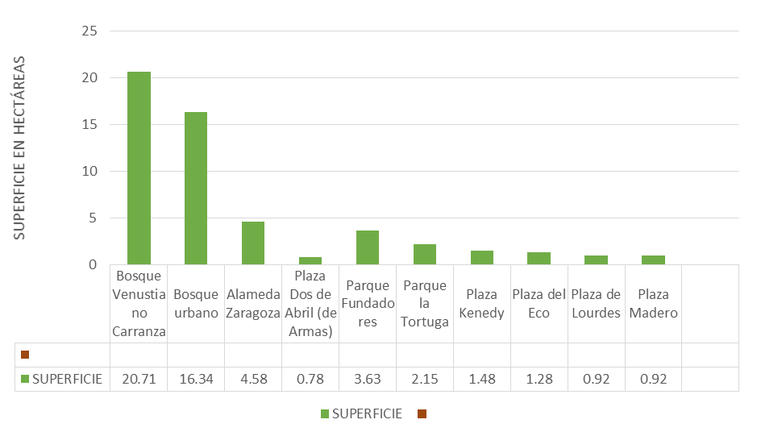
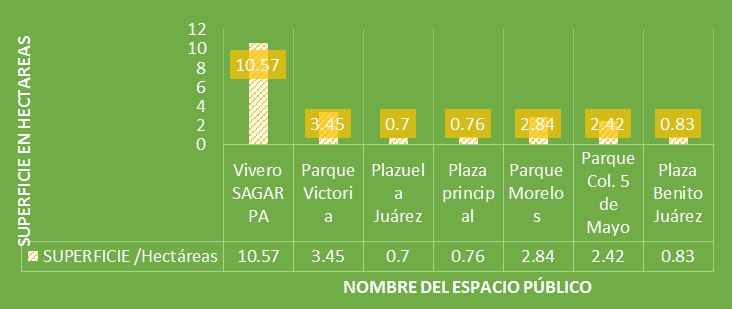

¿Cuál es el referente en las ciudades de la Laguna? Hasta hace algunos años las colonias y fraccionamientos habitacionales en la Comarca Lagunera se han construido en vecindarios de trama abierta con vialidades conectadas y accesibles así también contando con plazas y parques arbolados inclusivos a toda la ciudadanía, ejemplo de ello lo encontramos en Colonia Los Ángeles, Torreón Jardín, San Isidro, Campestre la Rosita, Las Rosas, El Campestre, en barrios populares de ciudad Lerdo y Gómez Palacio
La creciente necesidad de vivienda dada en los últimos años, descuidó en varios aspectos los modelos de agrupamiento de los nuevos conjuntos de viviendas y su estructuración con la ciudad, donde en ánimo de cubrir la necesidad omitió aspectos importantes en el tema de espacios de convivencia social, provocando un rezago significativo de espacios diseñados y ubicados apropiadamente para la recreación y convivencia deL mayor número de ciudadanos.
Actualmente los espacios públicos arbolados que son inclusivos a todos los ciudadanos son pocos en nuestras tres principales ciudades de la Laguna, a continuación menciono algunos de los más significativos y sus superficies:
Cuadro comparativo de superficies
| Nombre | Superficie (Hectáreas) | Ciudad |
|---|---|---|
| Bosque Venustiano Carranza | 20.71 | Torreón |
| Bosque urbano | 16.34 | Torreón |
| Alameda Zaragoza | 4.58 | Torreón |
| Plaza Dos de Abril (de Armas) | 0.78 | Torreón |
| Parque Fundadores | 3.63 | Torreón |
| Parque la Tortuga | 2.15 | Torreón |
| Plaza Kennedy | 1.48 | Torreón |
| Plaza del Eco | 1.28 | Torreón |
| Plaza de Lourdes | 0.92 | Torreón |
| Plaza Madero | 0.92 | Torreón |
| Vivero SAGARPA | 10.57 | Lerdo |
| Parque Victoria | 3.45 | Lerdo |
| Plazuela Juárez | 0.70 | Lerdo |
| Plaza principal | 0.76 | Lerdo |
| Parque Morelos | 2.84 | Gómez Palacio |
| Parque Col. 5 de Mayo | 2.42 | Gómez Palacio |
| Plaza Benito Juárez | 0.83 | Gómez Palacio |
Las ciudades que no cuentan con suficiente espacio público hacen más difícil y lenta su transformación y modernización. Muchos de los procesos de reestructuración de éxito se han centrado principalmente en la entrega de una nueva estructura de espacio público. Las ciudades con altas densidades particularmente necesitan área pública y área vial para dejar lugar suficiente para la circulación, la interacción y el tendido de la infraestructura.
Así pues, los buenos barrios serán aquéllos que permitan a sus residentes disfrutar del espacio exterior y que ofrezcan a los ciudadanos y ciudadanas que acceden a ellos unos buenos ámbitos públicos: parques, plazas, pórticos, porches, jardines y patios.
Dicho de otro modo, serán mejores los barrios abiertos en los que los gradientes de paso del ámbito público al privado sean más graduales y variados: calles de tráfico rodado y transporte público, calles de tráfico pacificado y de carga y descarga con horarios, plazas y ejes comerciales, espacios intermedios, como pórticos y porches, entradas a patios, jardines y vestíbulos, con la máxima variedad posible de espacios comunitarios, como corredores, hasta llegar al último filtro de la puerta de acceso a la vivienda. Se trata de potenciar espacios de proximidad que faciliten la socialización.
Superficies de los principales parques públicos en Torreón, Coahuila

Fuente: Superficie calculada a partir de Ortofoto.
Superficies de los principales parques públicos en Gómez Palacio y Lerdo, Durango

Fuente: Superficie aproximada a partir de Ortofoto.
En las últimas décadas, debido a la elección del ciudadano adulto y trabajador como parámetro de desarrollo y de cambio, la ciudad ha perdido una de sus características originarias, la de ser un lugar de encuentro e intercambio entre las personas. Ha renunciado a los espacios públicos que como punto de encuentro y de intercambio eran imprescindibles. Los patios, las aceras, las calles y las plazas han adquirido cada vez más, funciones asociadas al automóvil y al comercio, quitándoselas a los ciudadanos. La ciudad ha renunciado a ser un espacio compartido y sistémico, en el cual cada parte necesita de las otras, para destinar espacios definidos a funciones y clases sociales diversas, construyendo ghetos y zonas privilegiadas, vaciando los centros históricos dando vida a las modernas periferias. Las ciudades se han modificado y se han transformado en un ambiente malsano para la salud, debido a la contaminación atmosférica y acústica, a que están sucias y son peligrosas.(1)
Asociación Pedagógica Francesco Tonucci, Análisis de un malestar - La ciudad de los niños.